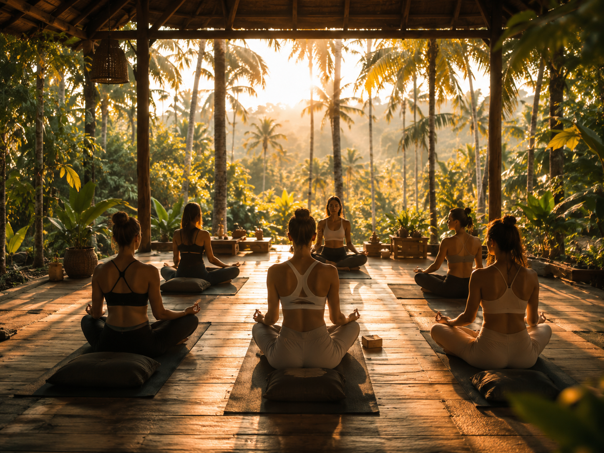
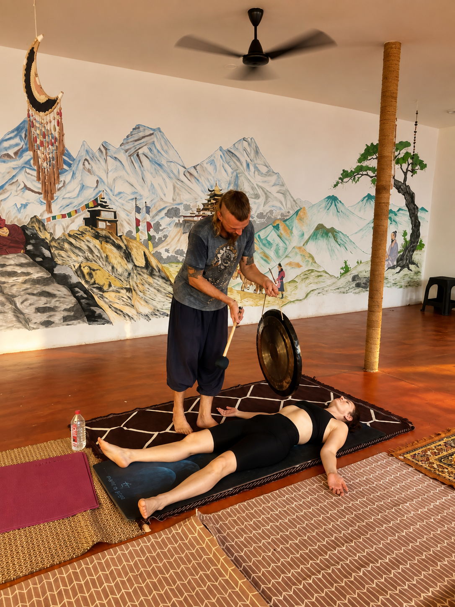
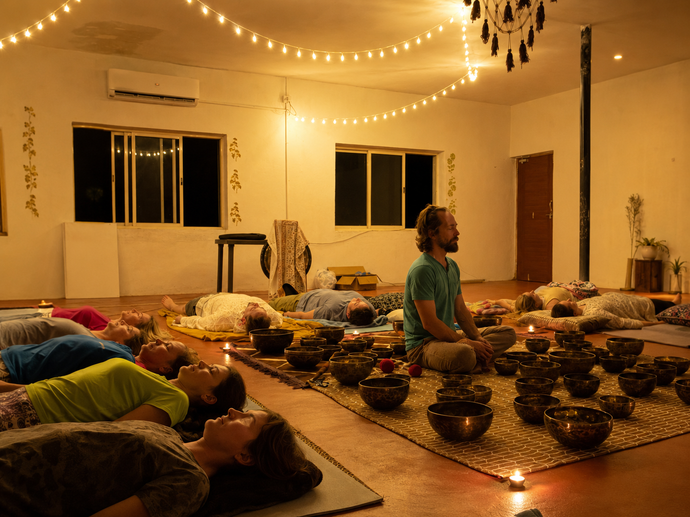
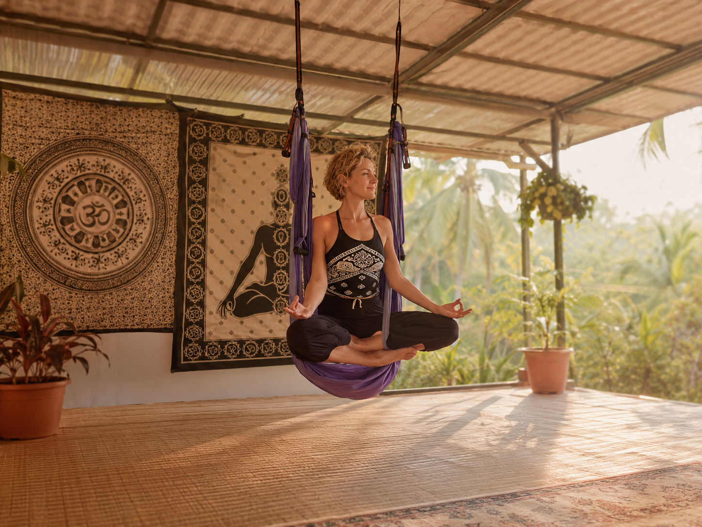
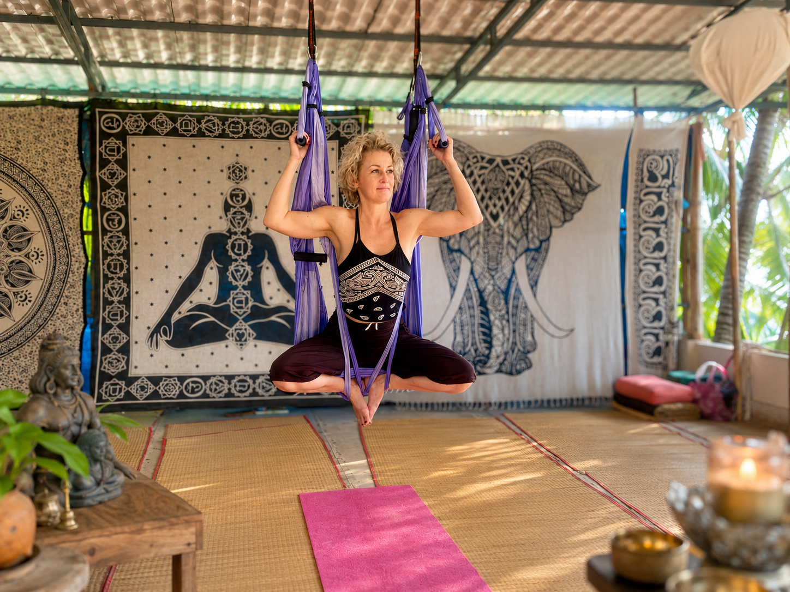
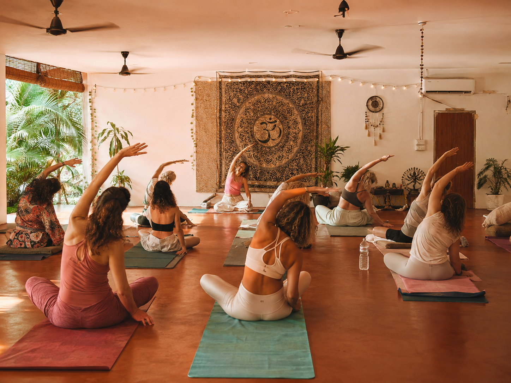
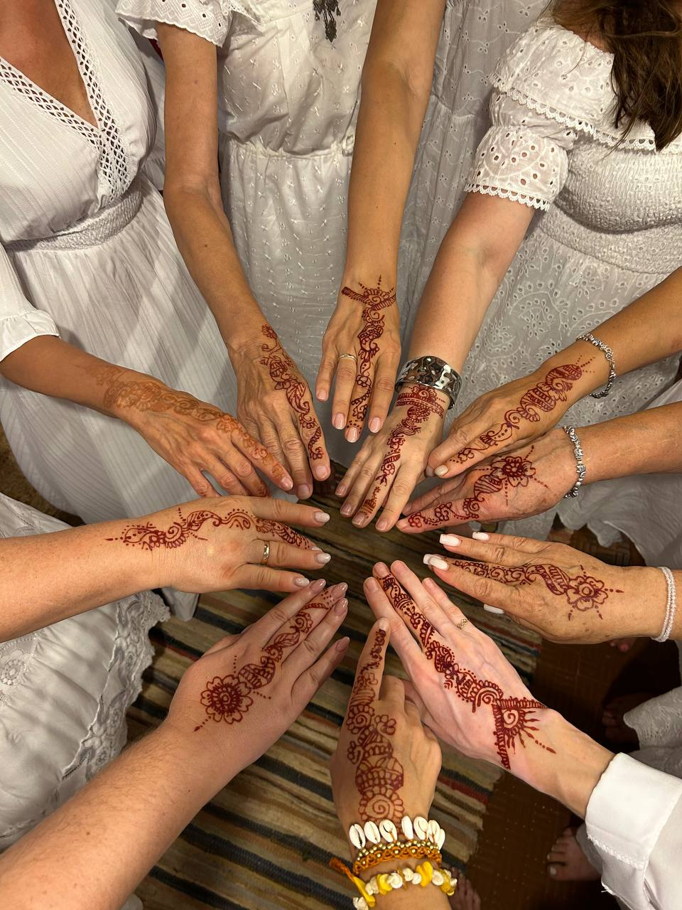

GOA FLOW · AN INNER JOURNEY
Practices
that stay with you.
This is not a checklist of classes. Each meeting is a gentle invitation to slow down, feel alive and hear what the usual rhythm can hide beneath its noise.

YOU DO NOT HAVE TO BECOME SOMEONE ELSE
You can simply
return to yourself.
Across twelve days, there is room for stillness, movement, creativity and real connection. Choose your depth; we create the conditions for change to arrive through attention rather than effort.
01 · SOUND AND STILLNESS
Gong and bowls,
when the body remembers stillness.
Gong vibrations move through tension and bring attention back to breath. Tibetan bowls add delicate overtones, like light between thoughts.
You can simply lie down, listen and stop solving anything. Sometimes that becomes the deepest part of the journey.


02 · BODY AND FREEDOM
Hammock yoga
and movement without judgement.
A hammock supports the body and returns playfulness to movement. You do not need flexibility or difficult shapes — only curiosity, breath and trust.
Afterwards, you want to walk to the ocean, laugh and live the day more vividly.


03 · MEETING YOURSELF
Women’s circle
and art therapy.
A women’s circle is a space without the need to appear stronger than you are. Speak, listen, be quiet and receive the group’s support.
In art therapy, colour, line and collage become a language for what words cannot always hold. You do not need to draw well. You only need honesty.


BEYOND THE STUDIO
Ecstatic dance,
live music and Goa.
Free movement to music without choreography or judgement. Concerts, jams and evenings by the ocean where you can dance, meet people and watch the sun go down in a living rhythm.
We go together to experience it safely, with pleasure and without having to perform.
GOA FLOW · 12 DAYS
You may go home with
a new sense of support.
Not a promise of a perfect life, but a memory of your own rhythm — and the knowledge of how to return to it.
Ask about the practices ↗